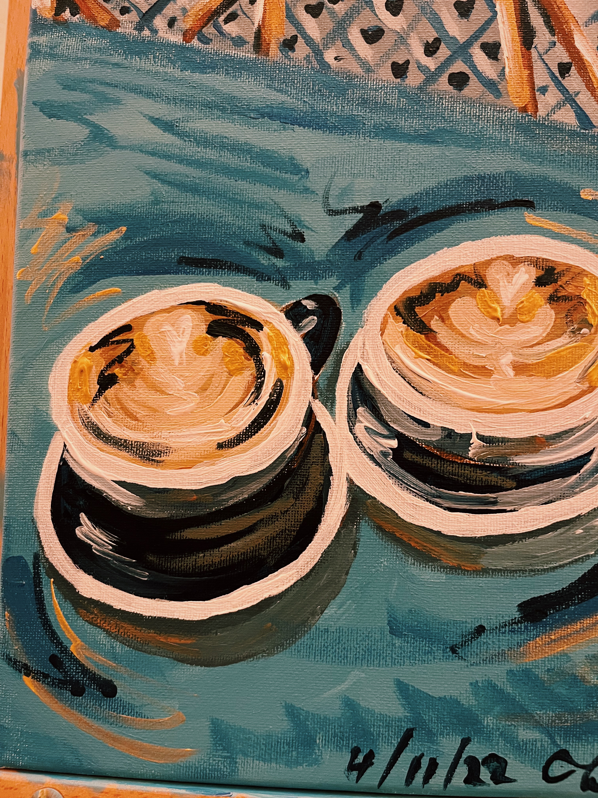

My name is Anna (or Anya). I'm a 3rd year ITM student at IIT. This is my second semester at the school because I just transferred here after completing my Associates degree in Computer Science at Wilbur Wright college.
Aside from attending school, I work at at cute little coffee shop in the suburbs.
In my spare time, I enjoy cooking, painting, photography, working out, reading, walking, and trying out different arts & crafts. Right now, I'm into acrylic painting.



He is a big fluffy boy named Pushkin. I rescued him about 4 years ago when he was a kitten.
Pushkin loves to sleep during the day and meow loudly at night.
He dislikes pets and he's not very good at jumping because he's too big for that.